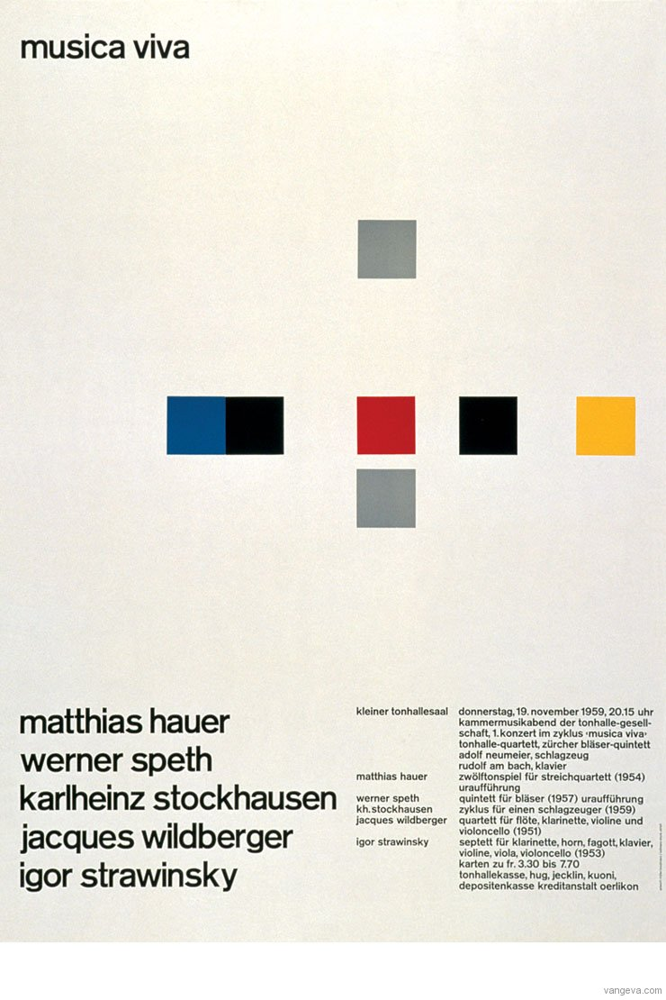

Josef Muller Brockmann was a Swiss graphic designer and teacher. He is widely recognised for his simple designs and his clean use use of typorgraphy, shapes and colors, which have inspired the work of many different graphic designers in the 21st century. Similarly, he has also produced several books on design and visual communication. In comparison to most graphic designers that are a part of the Swiss International Style, Muller-Brockmann was influenced by the ideas of several different design and art movements, some of which include Constructivism and the Bauhaus. Today, he is one of the most well-known Swiss graphic designers, and his name is easily recognised when disucssing the period. Some of his most famous work was done for the Zurich Town Hall as poster advertisements for its theatre productions. In addition, the many books he has published over the years, provide an excellent foundation for young graphic designers wishing to learn more about the profession. I personally gain huge inspiration from his work, as his clean yet striking use of typography and working with the grid in many aesthetically pleasing ways, is a tool that has hugely influnced my work as a graphic designer.
